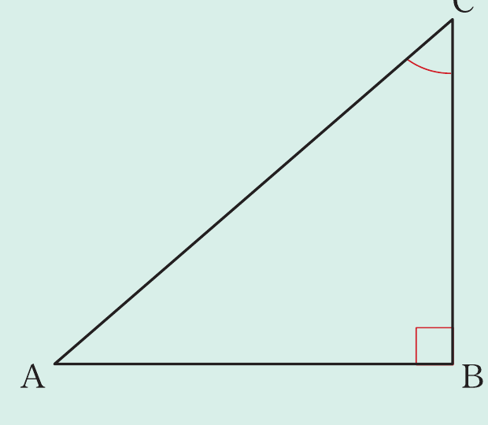
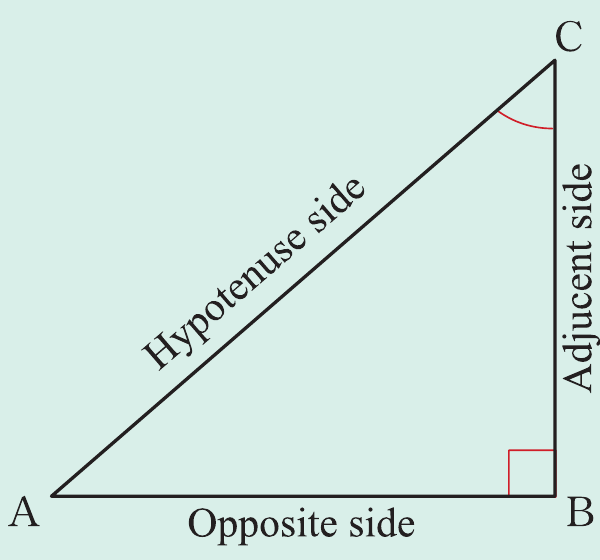
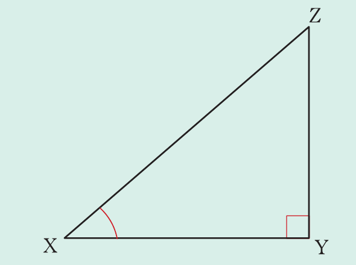

Example 8.1
Study the following triangle and answer the questions that follow.

- (a) Use angle C from ∆ABC to label the hypotenuse, opposite, and adjacent sides.
- (b) Use the triangle to write the trigonometric ratios for angles A and C.
Solution
(a) With reference to angle C, the triangle ABC is labelled as shown in the following figure. From the figure, AB is the length of the opposite side, BC is the length of the adjacent, and AC is the length of the hypotenuse.

C = ,\ \ C = .
Example 8.2
Given that draw a right-angled triangle that represents this information and determine each of the following ratios:
(a) sin Z
(b) cos Z
(c) tan Z
(d) cos X
(e) tan X
Solution
The respective right-angled triangle is shown in the following figure.

Mathematics for Secondary Schools